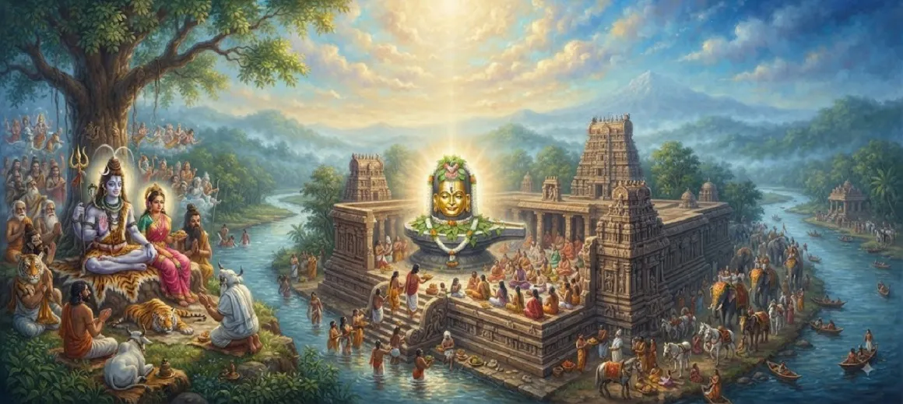

The Glory of Mallikarjuna Jyotirlinga
The ninth chapter of the Kotirudra Samhita narrates the enchanting legend and divine glory of the Mallikarjuna Jyotirlinga, situated on the sacred Srisailam mountain.
It recounts the divine pastime of Kartikeya and Ganesha, the parental love of Lord Shiva and Goddess Parvati, and their manifestation as a beacon of eternal grace.
This chapter reveals how true wisdom lies in honoring one's parents and how divine compassion flows wherever pure devotion resides.
Chapter 9 Highlights
Srisailam Sanctuary
Mallikarjuna is enshrined on the magnificent Srisailam mountain peak.
Kartikeya's Journey
Displeased after a contest, Kartikeya retreated to Krauncha mountain.
Ganesha's Wisdom
Ganesha won by circumambulating his parents as the embodiment of the cosmos.
Parental Compassion
Shiva and Parvati followed their son out of boundless parental love.
Jyotirlinga & Shakti
The shrine unites Mallikarjuna and Goddess Bhramaramba in one sacred spot.
Supreme Liberation
Darshan of Mallikarjuna washes away all sins and grants ultimate moksha.
Core Topics in This Chapter
- 01The Divine Contest Between Kartikeya and Ganesha→
- 02Ganesha's Wise Circumambulation→
- 03Kartikeya's Departure to Krauncha Mountain→
- 04The Compassionate Pursuit by Shiva and Parvati→
- 05Manifestation of Mallikarjuna and Bhramaramba→
- 06The Eternal Significance of Srisailam→
- 07Transition to Chapter 10→
The Divine Contest Between Kartikeya and Ganesha
Chapter 9 opens by describing a playful debate between Lord Kartikeya and Lord Ganesha over who should be married first among the divine brothers.
To resolve the matter fairly, Lord Shiva and Goddess Parvati proposed a contest: whoever successfully circumambulated the entire universe first would win.
Ganesha's Wise Circumambulation
Instantly mounting his divine vehicle, Kartikeya flew across the cosmos to complete the vast journey around the physical universe.
Meanwhile, wise Ganesha recognized that his parents embodied all worlds and sacred waters, and by circumambulating Shiva and Parvati, he fulfilled the condition with supreme wisdom.
Kartikeya's Departure to Krauncha Mountain
When Kartikeya returned from his exhaustive cosmic tour, he discovered that Ganesha had already been declared the winner based on scriptural wisdom.
Feeling aggrieved and slighted, Kartikeya left Kailasa and retreated to the distant Krauncha mountain peak, settling there away from his family.
The Compassionate Pursuit by Shiva and Parvati
Unable to bear the unbearable pain of separation from their beloved son, Lord Shiva and Goddess Parvati journeyed to Krauncha mountain to pacify him.
Their parental love transformed the landscape into a divine sanctuary where divine grace met unconditional affection.
Manifestation of Mallikarjuna and Bhramaramba
To stay close to Kartikeya while maintaining Their cosmic form, Lord Shiva manifested as the Mallikarjuna Jyotirlinga, and Goddess Parvati as Bhramaramba.
It is ordained that Shiva visits His son on every new moon day (Amavasya), while Parvati visits on every full moon day (Purnima).
The Eternal Significance of Srisailam
The chapter concludes by highlighting the unique glory of Srisailam, where a Jyotirlinga and a Shakti Peetha exist simultaneously in perfect harmony.
Pilgrims who visit this sacred mountain are absolved of all sins and attain spiritual fulfillment and liberation.
Transition to Chapter 10
Having explored the divine legend of Mallikarjuna at Srisailam, the narrative smoothly transitions to Chapter 10, which unveils the greatness of Mahakaleshvara.
Readers are thus guided further along the sacred pilgrimage of the twelve Jyotirlingas across Bharat.
Key Teachings of Chapter 9
Parental Reverence
Honoring parents is equivalent to circumambulating the entire universe.
Divine Affection
Shiva and Parvati exemplify boundless parental love and compassion.
Union of Opposites
Srisailam unites Supreme Shiva and Goddess Shakti in one divine kshetra.
Wisdom Over Might
True victory is achieved through spiritual understanding rather than mere physical travel.
Sacred Convergence
Periodic divine visits bridge family bonds with cosmic administration.
Guaranteed Moksha
Worshipping Mallikarjuna cleanses past karma and grants liberation.
Spiritual Reflection
The story of Mallikarjuna Jyotirlinga beautifully blends cosmic truth with tender human emotion. It teaches us that even the Supreme Lord and Mother of the Universe are deeply responsive to parental love and familial bonds. By establishing Their presence at Srisailam, Shiva and Parvati assure all devotees that wherever sincere devotion and love reside, the divine is eternally present.
Living the Message of Chapter 9
Cherish and honor your parents as living embodiments of the divine, recognizing their foundational role in your spiritual growth.
Cultivate wisdom and inner clarity in resolving conflicts, prioritizing understanding over ego-driven competition.
Seek the combined blessings of Lord Shiva and Goddess Shakti during your spiritual pilgrimage to holy shrines like Srisailam.
Key Spiritual Concepts
The radiant Jyotirlinga manifestation of Lord Shiva at Srisailam.
The divine form of Goddess Parvati residing alongside Mallikarjuna.
The sacred mountain peak housing both a Jyotirlinga and a Shakti Peetha.
The retreat destination chosen by Lord Kartikeya following the contest.
Devotion and profound respect shown toward parents and elders.
A sacred pilgrimage site dedicated to the Goddess, co-located at Srisailam.
Chapter Summary
Kotirudra Samhita Chapter 9 narrates the touching legend of Mallikarjuna Jyotirlinga at Srisailam. Triggered by Kartikeya's departure after a cosmic contest won wisely by Ganesha through parental circumambulation, Lord Shiva and Goddess Parvati followed their son out of boundless love. Their divine manifestation as Mallikarjuna and Bhramaramba created an eternal sanctuary of grace, setting the stage for the revelation of Mahakaleshvara in Chapter 10.
Frequently Asked Questions
1. What is the main subject of Kotirudra Samhita Chapter 9?
Chapter 9 details the sacred glory and manifestation of the Mallikarjuna Jyotirlinga at Srisailam, triggered by the divine pastime of Kartikeya and Ganesha.
2. Why did Kartikeya leave Kailasa and go to Krauncha mountain?
Kartikeya left Kailasa in a huff after losing a competition of world circumambulation to his younger brother Ganesha, who won by circumambulating their parents.
3. How did Lord Shiva and Goddess Parvati manifest as Mallikarjuna?
Unable to bear separation from Kartikeya, Shiva and Parvati visited him on Krauncha mountain, where Shiva manifested as a Jyotirlinga and Parvati as Mallika.
4. What is the significance of Srisailam as a holy site?
Srisailam is revered as a unique kshetra where both a Jyotirlinga (Mallikarjuna) and a Shakti Peetha (Bhramaramba) reside together in divine union.
5. How does Chapter 9 connect to the surrounding chapters?
Chapter 9 follows the origin of Somnath Jyotirlinga from Chapter 8 and directly precedes Chapter 10, which explores the greatness of Mahakaleshvara.
6. What is the core spiritual takeaway of this chapter?
Honouring parents is equal to worshipping the entire universe, and divine grace always follows parental devotion and unconditional love.
“Manifesting as Mallikarjuna and Bhramaramba at Srisailam, Lord Shiva and Goddess Shakti eternally shower grace upon all devoted seekers.”
Continue Through Kotirudra Samhita
Chapter 9 explores the glory of Mallikarjuna Jyotirlinga. Continue to Chapter 10, The Greatness of Mahakaleshvara.